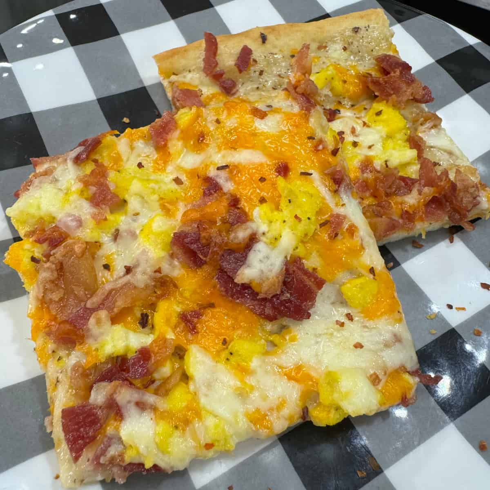

Gas-station breakfast pizza, promoted to your own oven — crust, white gravy, eggs, bacon, two cheeses — via Cooking in the Midwest. The gravy is the sauce. It also freezes by the square for weekday mornings.
Lay the bacon on a parchment-lined sheet pan and bake at 400°F for 20–25 minutes until crisp. Drain on paper towels, then chop.
Mix the crust per the package, press it over a large sheet pan, dock it all over with a fork, and prebake per the package directions. Crank the oven to 475°F when it comes out.
Soft-scramble the eggs on the stove — pull them while still glossy, they get a second cook on the pizza. Season with salt and pepper.
Gravy: melt the butter over medium-high, whisk in the flour, and cook one minute. Pour in the milk and whisk until it coats a spoon. Season it more than you think — pale gravy hides salt.
Build it: gravy over the crust edge to edge, both cheeses, then eggs and bacon.
Bake at 475°F for about 10 minutes, until the cheese melts and the edges brown. Cut into squares. Hot sauce is not optional in this house.